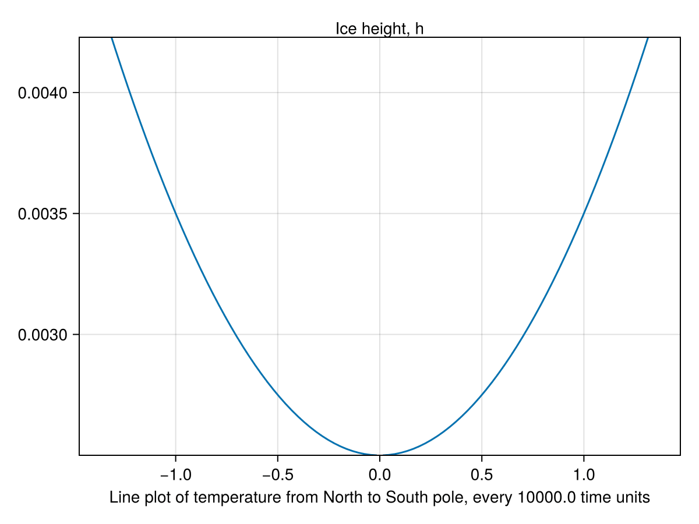

Budko-Sellers-Halfar
In this example, we will compose the Budyko-Sellers 1D energy balance model of the Earth's surface temperature with the Halfar model of glacial dynamics. Note that each of these components models is itself a composition of smaller physical models. In this walkthrough, we will compose them together using the same techniques.
# AlgebraicJulia Dependencies
using Catlab
using CombinatorialSpaces
using DiagrammaticEquations
using Decapodes
# External Dependencies
using CairoMakie
using ComponentArrays
using GeometryBasics: Point2
using JLD2
using LinearAlgebra
using MLStyle
using OrdinaryDiffEq
using SparseArrays
Point2D = Point2{Float64};We have defined the Halfar ice model in other docs pages, and so will quickly define it here.
halfar_eq2 = @decapode begin
h::Form0
Γ::Form1
n::Constant
ḣ == ∂ₜ(h)
ḣ == ∘(⋆, d, ⋆)(Γ * d(h) * avg₀₁(mag(♯(d(h)))^(n-1)) * avg₀₁(h^(n+2)))
end
glens_law = @decapode begin
Γ::Form1
A::Form1
(ρ,g,n)::Constant
Γ == (2/(n+2))*A*(ρ*g)^n
end
ice_dynamics_composition_diagram = @relation () begin
dynamics(Γ,n)
stress(Γ,n)
end
ice_dynamics_cospan = oapply(ice_dynamics_composition_diagram,
[Open(halfar_eq2, [:Γ,:n]),
Open(glens_law, [:Γ,:n])])
halfar = apex(ice_dynamics_cospan)
to_graphviz(halfar, verbose=false)
We will introduce the Budyko-Sellers energy balance model in more detail. First, let's define the composite physics. We will visualize them all in a single diagram without any composition at first:
energy_balance = @decapode begin
(Tₛ, ASR, OLR, HT)::Form0
(C)::Constant
Tₛ̇ == ∂ₜ(Tₛ)
Tₛ̇ == (ASR - OLR + HT) ./ C
end
absorbed_shortwave_radiation = @decapode begin
(Q, ASR)::Form0
α::Constant
ASR == (1 .- α) .* Q
end
outgoing_longwave_radiation = @decapode begin
(Tₛ, OLR)::Form0
(A,B)::Constant
OLR == A .+ (B .* Tₛ)
end
heat_transfer = @decapode begin
(HT, Tₛ)::Form0
(D,cosϕᵖ,cosϕᵈ)::Constant
HT == (D ./ cosϕᵖ) .* ⋆(d(cosϕᵈ .* ⋆(d(Tₛ))))
end
insolation = @decapode begin
Q::Form0
cosϕᵖ::Constant
Q == 450 * cosϕᵖ
end
to_graphviz(oplus([energy_balance, absorbed_shortwave_radiation, outgoing_longwave_radiation, heat_transfer, insolation]), directed=false)
Now let's compose the Budyko-Sellers model:
budyko_sellers_composition_diagram = @relation () begin
energy(Tₛ, ASR, OLR, HT)
absorbed_radiation(Q, ASR)
outgoing_radiation(Tₛ, OLR)
diffusion(Tₛ, HT, cosϕᵖ)
insolation(Q, cosϕᵖ)
end
draw_composition(budyko_sellers_composition_diagram)
-->
<!-- Title: G Pages: 1 -->
<svg width="903pt" height="874pt"
viewBox="0.00 0.00 902.56 873.77" xmlns="http://www.w3.org/2000/svg" xmlns:xlink="http://www.w3.org/1999/xlink">
<g id="graph0" class="graph" transform="scale(1 1) rotate(0) translate(4 869.77)">
<title>G</title>
<polygon fill="white" stroke="transparent" points="-4,4 -4,-869.77 898.56,-869.77 898.56,4 -4,4"/>
<!-- n1 -->
<g id="box1" class="node">
<title>n1</title>
<ellipse fill="none" stroke="black" cx="390.42" cy="-847.77" rx="34.29" ry="18"/>
<text text-anchor="middle" x="390.42" y="-844.07" font-family="Serif" font-size="14.00">energy</text>
</g>
<!-- n6 -->
<!-- junction -->
<g id="junction1" class="node">
<title>n6</title>
<ellipse fill="black" stroke="black" cx="628.56" cy="-813.53" rx="2.5" ry="2.5"/>
<text text-anchor="middle" x="619.06" y="-819.83" font-family="Serif" font-size="14.00">Tₛ</text>
</g>
<!-- n1&%2345;&%2345;n6 -->
<g id="edge1" class="edge">
<title>n1&%2345;&%2345;n6</title>
<path fill="none" stroke="black" d="M423.53,-843C483.6,-834.37 606.15,-816.75 625.86,-813.91"/>
</g>
<!-- n7 -->
<!-- junction -->
<g id="junction2" class="node">
<title>n7</title>
<ellipse fill="black" stroke="black" cx="810.38" cy="-194.29" rx="2.5" ry="2.5"/>
<text text-anchor="middle" x="792.38" y="-200.59" font-family="Serif" font-size="14.00">ASR</text>
</g>
<!-- n1&%2345;&%2345;n7 -->
<g id="edge4" class="edge">
<title>n1&%2345;&%2345;n7</title>
<path fill="none" stroke="black" d="M401.43,-830.62C465.11,-731.55 784.03,-235.29 808.85,-196.67"/>
</g>
<!-- n8 -->
<!-- junction -->
<g id="junction3" class="node">
<title>n8</title>
<ellipse fill="black" stroke="black" cx="878.16" cy="-425.13" rx="2.5" ry="2.5"/>
<text text-anchor="middle" x="860.16" y="-431.43" font-family="Serif" font-size="14.00">OLR</text>
</g>
<!-- n1&%2345;&%2345;n8 -->
<g id="edge6" class="edge">
<title>n1&%2345;&%2345;n8</title>
<path fill="none" stroke="black" d="M408.36,-832.22C492.57,-759.25 845.89,-453.09 876.1,-426.92"/>
</g>
<!-- n9 -->
<!-- junction -->
<g id="junction4" class="node">
<title>n9</title>
<ellipse fill="black" stroke="black" cx="171.57" cy="-747.82" rx="2.5" ry="2.5"/>
<text text-anchor="middle" x="158.07" y="-754.12" font-family="Serif" font-size="14.00">HT</text>
</g>
<!-- n1&%2345;&%2345;n9 -->
<g id="edge8" class="edge">
<title>n1&%2345;&%2345;n9</title>
<path fill="none" stroke="black" d="M364.45,-835.91C311.01,-811.5 192.18,-757.23 173.94,-748.9"/>
</g>
<!-- n2 -->
<g id="box2" class="node">
<title>n2</title>
<ellipse fill="none" stroke="black" cx="628.56" cy="-36.74" rx="85.89" ry="18"/>
<text text-anchor="middle" x="628.56" y="-33.04" font-family="Serif" font-size="14.00">absorbed_radiation</text>
</g>
<!-- n2&%2345;&%2345;n7 -->
<g id="edge5" class="edge">
<title>n2&%2345;&%2345;n7</title>
<path fill="none" stroke="black" d="M649.06,-54.51C692.9,-92.49 793.01,-179.24 808.38,-192.56"/>
</g>
<!-- n10 -->
<!-- junction -->
<g id="junction5" class="node">
<title>n10</title>
<ellipse fill="black" stroke="black" cx="390.42" cy="-2.5" rx="2.5" ry="2.5"/>
<text text-anchor="middle" x="381.92" y="-8.8" font-family="Serif" font-size="14.00">Q</text>
</g>
<!-- n2&%2345;&%2345;n10 -->
<g id="edge10" class="edge">
<title>n2&%2345;&%2345;n10</title>
<path fill="none" stroke="black" d="M557.43,-26.51C494.38,-17.45 409.81,-5.29 393.28,-2.91"/>
</g>
<!-- n3 -->
<g id="box3" class="node">
<title>n3</title>
<ellipse fill="none" stroke="black" cx="810.38" cy="-655.97" rx="84.36" ry="18"/>
<text text-anchor="middle" x="810.38" y="-652.27" font-family="Serif" font-size="14.00">outgoing_radiation</text>
</g>
<!-- n3&%2345;&%2345;n6 -->
<g id="edge2" class="edge">
<title>n3&%2345;&%2345;n6</title>
<path fill="none" stroke="black" d="M789.88,-673.74C746.04,-711.73 645.93,-798.47 630.55,-811.8"/>
</g>
<!-- n3&%2345;&%2345;n8 -->
<g id="edge7" class="edge">
<title>n3&%2345;&%2345;n8</title>
<path fill="none" stroke="black" d="M815.7,-637.86C830.49,-587.48 871.43,-448.06 877.42,-427.64"/>
</g>
<!-- n4 -->
<g id="box4" class="node">
<title>n4</title>
<ellipse fill="none" stroke="black" cx="41.5" cy="-545.43" rx="41.41" ry="18"/>
<text text-anchor="middle" x="41.5" y="-541.73" font-family="Serif" font-size="14.00">diffusion</text>
</g>
<!-- n4&%2345;&%2345;n6 -->
<g id="edge3" class="edge">
<title>n4&%2345;&%2345;n6</title>
<path fill="none" stroke="black" d="M70.21,-558.54C183.01,-610.05 591.3,-796.51 626.18,-812.44"/>
</g>
<!-- n4&%2345;&%2345;n9 -->
<g id="edge9" class="edge">
<title>n4&%2345;&%2345;n9</title>
<path fill="none" stroke="black" d="M52.82,-563.03C81.99,-608.43 158.3,-727.17 170.04,-745.45"/>
</g>
<!-- n11 -->
<!-- junction -->
<g id="junction6" class="node">
<title>n11</title>
<ellipse fill="black" stroke="black" cx="41.5" cy="-304.84" rx="2.5" ry="2.5"/>
<text text-anchor="middle" x="19.5" y="-311.14" font-family="Serif" font-size="14.00">cosϕᵖ</text>
</g>
<!-- n4&%2345;&%2345;n11 -->
<g id="edge12" class="edge">
<title>n4&%2345;&%2345;n11</title>
<path fill="none" stroke="black" d="M41.5,-527.34C41.5,-475.54 41.5,-328.95 41.5,-307.48"/>
</g>
<!-- n5 -->
<g id="box5" class="node">
<title>n5</title>
<ellipse fill="none" stroke="black" cx="171.57" cy="-102.44" rx="45.83" ry="18"/>
<text text-anchor="middle" x="171.57" y="-98.74" font-family="Serif" font-size="14.00">insolation</text>
</g>
<!-- n5&%2345;&%2345;n10 -->
<g id="edge11" class="edge">
<title>n5&%2345;&%2345;n10</title>
<path fill="none" stroke="black" d="M201.54,-88.76C256.33,-63.74 368.77,-12.39 387.69,-3.75"/>
</g>
<!-- n5&%2345;&%2345;n11 -->
<g id="edge13" class="edge">
<title>n5&%2345;&%2345;n11</title>
<path fill="none" stroke="black" d="M160.26,-120.05C131.08,-165.45 54.77,-284.19 43.03,-302.46"/>
</g>
</g>
</svg>
)
budyko_sellers_cospan = oapply(budyko_sellers_composition_diagram,
[Open(energy_balance, [:Tₛ, :ASR, :OLR, :HT]),
Open(absorbed_shortwave_radiation, [:Q, :ASR]),
Open(outgoing_longwave_radiation, [:Tₛ, :OLR]),
Open(heat_transfer, [:Tₛ, :HT, :cosϕᵖ]),
Open(insolation, [:Q, :cosϕᵖ])])
budyko_sellers = apex(budyko_sellers_cospan)
# Save this Decapode as a JSON file
write_json_acset(budyko_sellers, "budyko_sellers.json")
to_graphviz(budyko_sellers, verbose=false)
Warming
We need to specify physically what it means for these two terms to interact. We will say that ice will diffuse faster as temperature increases, and will pick some coefficients that demonstrate interesting dynamics on short timescales.
warming = @decapode begin
Tₛ::Form0
A::Form1
A == avg₀₁(5.8282*10^(-0.236 * Tₛ)*1.65e7)
end
to_graphviz(warming)
Composition
Observe that Decapodes composition is hierarchical. This composition technique is the same as that used in composing each of the Budyko-Sellers and Halfar models.
budyko_sellers_halfar_composition_diagram = @relation () begin
budyko_sellers(Tₛ)
warming(A, Tₛ)
halfar(A)
end
draw_composition(budyko_sellers_halfar_composition_diagram)
-->
<!-- Title: G Pages: 1 -->
<svg width="585pt" height="44pt"
viewBox="0.00 0.00 585.03 44.00" xmlns="http://www.w3.org/2000/svg" xmlns:xlink="http://www.w3.org/1999/xlink">
<g id="graph0" class="graph" transform="scale(1 1) rotate(0) translate(4 40)">
<title>G</title>
<polygon fill="white" stroke="transparent" points="-4,4 -4,-40 581.03,-40 581.03,4 -4,4"/>
<!-- n1 -->
<g id="box1" class="node">
<title>n1</title>
<ellipse fill="none" stroke="black" cx="67.11" cy="-18" rx="67.22" ry="18"/>
<text text-anchor="middle" x="67.11" y="-14.3" font-family="Serif" font-size="14.00">budyko_sellers</text>
</g>
<!-- n4 -->
<!-- junction -->
<g id="junction1" class="node">
<title>n4</title>
<ellipse fill="black" stroke="black" cx="208.72" cy="-18" rx="2.5" ry="2.5"/>
<text text-anchor="middle" x="199.22" y="-24.3" font-family="Serif" font-size="14.00">Tₛ</text>
</g>
<!-- n1&%2345;&%2345;n4 -->
<g id="edge1" class="edge">
<title>n1&%2345;&%2345;n4</title>
<path fill="none" stroke="black" d="M134.59,-18C165.37,-18 196.98,-18 206.11,-18"/>
</g>
<!-- n2 -->
<g id="box2" class="node">
<title>n2</title>
<ellipse fill="none" stroke="black" cx="325.6" cy="-18" rx="42.27" ry="18"/>
<text text-anchor="middle" x="325.6" y="-14.3" font-family="Serif" font-size="14.00">warming</text>
</g>
<!-- n2&%2345;&%2345;n4 -->
<g id="edge2" class="edge">
<title>n2&%2345;&%2345;n4</title>
<path fill="none" stroke="black" d="M283.07,-18C254.61,-18 220.7,-18 211.26,-18"/>
</g>
<!-- n5 -->
<!-- junction -->
<g id="junction2" class="node">
<title>n5</title>
<ellipse fill="black" stroke="black" cx="442.48" cy="-18" rx="2.5" ry="2.5"/>
<text text-anchor="middle" x="434.98" y="-24.3" font-family="Serif" font-size="14.00">A</text>
</g>
<!-- n2&%2345;&%2345;n5 -->
<g id="edge3" class="edge">
<title>n2&%2345;&%2345;n5</title>
<path fill="none" stroke="black" d="M368.13,-18C396.59,-18 430.5,-18 439.94,-18"/>
</g>
<!-- n3 -->
<g id="box3" class="node">
<title>n3</title>
<ellipse fill="none" stroke="black" cx="547" cy="-18" rx="30.04" ry="18"/>
<text text-anchor="middle" x="547" y="-14.3" font-family="Serif" font-size="14.00">halfar</text>
</g>
<!-- n3&%2345;&%2345;n5 -->
<g id="edge4" class="edge">
<title>n3&%2345;&%2345;n5</title>
<path fill="none" stroke="black" d="M516.77,-18C490.49,-18 455.1,-18 445.17,-18"/>
</g>
</g>
</svg>
)
We apply a composition by plugging in a Decapode for each component. We also specify the internal name of the variables to be used in combining.
budyko_sellers_halfar_cospan = oapply(budyko_sellers_halfar_composition_diagram,
[Open(budyko_sellers, [:Tₛ]),
Open(warming, [:A, :Tₛ]),
Open(halfar, [:stress_A])])
budyko_sellers_halfar = apex(budyko_sellers_halfar_cospan)
to_graphviz(budyko_sellers_halfar)
We can perform type inference to determine what kind of differential form each of our variables are. This is done automatically with the dimension=1 keyword given to gensim, but we will do it in-place for demonstration purposes.
budyko_sellers_halfar = expand_operators(budyko_sellers_halfar)
infer_types!(budyko_sellers_halfar, op1_inf_rules_1D, op2_inf_rules_1D)
resolve_overloads!(budyko_sellers_halfar, op1_res_rules_1D, op2_res_rules_1D)
to_graphviz(budyko_sellers_halfar)
Defining the mesh
These dynamics will occur on a 1-D manifold (a line). Points near +-π/2 will represent points near the North/ South poles. Points near 0 represent those at the equator.
s = EmbeddedDeltaSet1D{Bool, Point2D}()
add_vertices!(s, 100, point=Point2D.(range(-π/2 + π/32, π/2 - π/32, length=100), 0))
add_edges!(s, 1:nv(s)-1, 2:nv(s))
orient!(s)
sd = EmbeddedDeltaDualComplex1D{Bool, Float64, Point2D}(s)
subdivide_duals!(sd, Circumcenter())Define input data
We need to supply initial conditions to our model. We will use synthetic data here.
# This is a primal 0-form, with values at vertices.
cosϕᵖ = map(x -> cos(x[1]), point(s))
# This is a dual 0-form, with values at edge centers.
cosϕᵈ = map(edges(s)) do e
(cos(point(s, src(s, e))[1]) + cos(point(s, tgt(s, e))[1])) / 2
end
α₀ = 0.354
α₂ = 0.25
α = map(point(s)) do ϕ
α₀ + α₂*((1/2)*(3*ϕ[1]^2 - 1))
end
A = 210
B = 2
f = 0.70
ρ = 1025
cw = 4186
H = 70
C = map(point(s)) do ϕ
f * ρ * cw * H
end
D = 0.6
# Isothermal initial conditions:
Tₛ₀ = map(point(s)) do ϕ
15
end
# Visualize initial condition for temperature.
lines(map(x -> x[1], point(s)), Tₛ₀)
n = 3
ρ = 910
g = 9.8
# Ice height is a primal 0-form, with values at vertices.
h₀ = map(point(s)) do (x,_)
(((x)^2)+2.5) / 1e3
end
# Visualize initial condition for ice sheet height.
lines(map(x -> x[1], point(s)), h₀)
# Store these values to be passed to the solver.
u₀ = ComponentArray(Tₛ=Tₛ₀, halfar_dynamics_h=h₀)
constants_and_parameters = (
budyko_sellers_absorbed_radiation_α = α,
budyko_sellers_outgoing_radiation_A = A,
budyko_sellers_outgoing_radiation_B = B,
budyko_sellers_energy_C = C,
budyko_sellers_diffusion_D = D,
budyko_sellers_cosϕᵖ = cosϕᵖ,
budyko_sellers_diffusion_cosϕᵈ = cosϕᵈ,
halfar_n = n,
halfar_stress_ρ = ρ,
halfar_stress_g = g)(budyko_sellers_absorbed_radiation_α = [1.042230343107338, 1.0097044483518975, 0.9778423473669757, 0.9466440401525731, 0.9161095267086897, 0.8862388070353256, 0.8570318811324809, 0.828488749000155, 0.8006094106383485, 0.7733938660470613 … 0.7733938660470613, 0.8006094106383485, 0.828488749000155, 0.8570318811324809, 0.8862388070353256, 0.9161095267086897, 0.9466440401525731, 0.9778423473669757, 1.0097044483518975, 1.042230343107338], budyko_sellers_outgoing_radiation_A = 210, budyko_sellers_outgoing_radiation_B = 2, budyko_sellers_energy_C = [2.1024185e8, 2.1024185e8, 2.1024185e8, 2.1024185e8, 2.1024185e8, 2.1024185e8, 2.1024185e8, 2.1024185e8, 2.1024185e8, 2.1024185e8 … 2.1024185e8, 2.1024185e8, 2.1024185e8, 2.1024185e8, 2.1024185e8, 2.1024185e8, 2.1024185e8, 2.1024185e8, 2.1024185e8, 2.1024185e8], budyko_sellers_diffusion_D = 0.6, budyko_sellers_cosϕᵖ = [0.09801714032956077, 0.12757607738957208, 0.15702211050324905, 0.18632918013489802, 0.21547134973054533, 0.24442282867160953, 0.2731579950994198, 0.30165141859038386, 0.32987788266173657, 0.35781240708795353 … 0.35781240708795353, 0.32987788266173657, 0.30165141859038386, 0.2731579950994198, 0.24442282867160953, 0.21547134973054533, 0.18632918013489802, 0.15702211050324905, 0.12757607738957208, 0.09801714032956077], budyko_sellers_diffusion_cosϕᵈ = [0.11279660885956642, 0.14229909394641055, 0.17167564531907353, 0.20090026493272167, 0.22994708920107743, 0.25879041188551466, 0.2874047068449018, 0.3157646506260602, 0.3438451448748451, 0.37162133854801555 … 0.37162133854801555, 0.3438451448748451, 0.3157646506260602, 0.2874047068449018, 0.25879041188551466, 0.22994708920107743, 0.20090026493272167, 0.17167564531907353, 0.14229909394641055, 0.11279660885956642], halfar_n = 3, halfar_stress_ρ = 910, halfar_stress_g = 9.8)Symbols to functions
The symbols along edges in our Decapode must be mapped to executable functions. In the Discrete Exterior Calculus, all our operators are defined as relations between points, lines, and triangles on meshes known as simplicial sets. Thus, DEC operators are re-usable across any simplicial set.
function generate(sd, my_symbol; hodge=GeometricHodge())
op = @match my_symbol begin
:♯ => x -> begin
# This is an implementation of the "sharp" operator from the exterior
# calculus, which takes co-vector fields to vector fields.
# This could be up-streamed to the CombinatorialSpaces.jl library. (i.e.
# this operation is not bespoke to this simulation.)
e_vecs = map(edges(sd)) do e
point(sd, sd[e, :∂v0]) - point(sd, sd[e, :∂v1])
end
neighbors = map(vertices(sd)) do v
union(incident(sd, v, :∂v0), incident(sd, v, :∂v1))
end
n_vecs = map(neighbors) do es
[e_vecs[e] for e in es]
end
map(neighbors, n_vecs) do es, nvs
sum([nv*norm(nv)*x[e] for (e,nv) in zip(es,nvs)]) / sum(norm.(nvs))
end
end
:mag => x -> norm.(x)
x => error("Unmatched operator $my_symbol")
end
return (args...) -> op(args...)
endgenerate (generic function with 1 method)Simulation generation
From our Decapode, we automatically generate a finite difference method solver that performs explicit time-stepping to solve our system of multiphysics equations.
sim = eval(gensim(budyko_sellers_halfar, dimension=1))
fₘ = sim(sd, generate)(::Main.var"#f#44"{PreallocationTools.FixedSizeDiffCache{Vector{Float64}, Vector{ForwardDiff.Dual{nothing, Float64, 12}}}, PreallocationTools.FixedSizeDiffCache{Vector{Float64}, Vector{ForwardDiff.Dual{nothing, Float64, 12}}}, PreallocationTools.FixedSizeDiffCache{Vector{Float64}, Vector{ForwardDiff.Dual{nothing, Float64, 12}}}, PreallocationTools.FixedSizeDiffCache{Vector{Float64}, Vector{ForwardDiff.Dual{nothing, Float64, 11}}}, PreallocationTools.FixedSizeDiffCache{Vector{Float64}, Vector{ForwardDiff.Dual{nothing, Float64, 12}}}, PreallocationTools.FixedSizeDiffCache{Vector{Float64}, Vector{ForwardDiff.Dual{nothing, Float64, 12}}}, PreallocationTools.FixedSizeDiffCache{Vector{Float64}, Vector{ForwardDiff.Dual{nothing, Float64, 12}}}, PreallocationTools.FixedSizeDiffCache{Vector{Float64}, Vector{ForwardDiff.Dual{nothing, Float64, 11}}}, PreallocationTools.FixedSizeDiffCache{Vector{Float64}, Vector{ForwardDiff.Dual{nothing, Float64, 12}}}, PreallocationTools.FixedSizeDiffCache{Vector{Float64}, Vector{ForwardDiff.Dual{nothing, Float64, 12}}}, PreallocationTools.FixedSizeDiffCache{Vector{Float64}, Vector{ForwardDiff.Dual{nothing, Float64, 12}}}, PreallocationTools.FixedSizeDiffCache{Vector{Float64}, Vector{ForwardDiff.Dual{nothing, Float64, 12}}}, PreallocationTools.FixedSizeDiffCache{Vector{Float64}, Vector{ForwardDiff.Dual{nothing, Float64, 12}}}, PreallocationTools.FixedSizeDiffCache{Vector{Float64}, Vector{ForwardDiff.Dual{nothing, Float64, 12}}}, PreallocationTools.FixedSizeDiffCache{Vector{Float64}, Vector{ForwardDiff.Dual{nothing, Float64, 12}}}, PreallocationTools.FixedSizeDiffCache{Vector{Float64}, Vector{ForwardDiff.Dual{nothing, Float64, 12}}}, PreallocationTools.FixedSizeDiffCache{Vector{Float64}, Vector{ForwardDiff.Dual{nothing, Float64, 12}}}, PreallocationTools.FixedSizeDiffCache{Vector{Float64}, Vector{ForwardDiff.Dual{nothing, Float64, 11}}}, PreallocationTools.FixedSizeDiffCache{Vector{Float64}, Vector{ForwardDiff.Dual{nothing, Float64, 11}}}, PreallocationTools.FixedSizeDiffCache{Vector{Float64}, Vector{ForwardDiff.Dual{nothing, Float64, 11}}}, SparseArrays.SparseMatrixCSC{Float64, Int32}, SparseArrays.SparseMatrixCSC{Float64, Int32}, SparseArrays.SparseMatrixCSC{Float64, Int64}, Main.var"#26#35"{Main.var"#25#34"}, SparseArrays.SparseMatrixCSC{Int8, Int32}, Decapodes.var"#37#38"{SparseArrays.SparseMatrixCSC{Float64, Int32}}, SparseArrays.SparseMatrixCSC{Float64, Int32}, Main.var"#26#35"{Main.var"#18#27"{CombinatorialSpaces.DiscreteExteriorCalculus.EmbeddedDeltaDualComplex1D{Bool, Float64, GeometryBasics.Point{2, Float64}}}}}) (generic function with 1 method)Run simulation
We wrap our simulator and initial conditions and solve them with the stability-detection and time-stepping methods provided by DifferentialEquations.jl .
tₑ = 1e6
@info("Solving")
prob = ODEProblem(fₘ, u₀, (0, tₑ), constants_and_parameters)
soln = solve(prob, Tsit5())
@show soln.retcode
@info("Done")[ Info: Solving
soln.retcode = SciMLBase.ReturnCode.Success
[ Info: DoneWe can save the solution file to examine later.
@save "budyko_sellers_halfar.jld2" soln┌ Warning: Attempting to store SciMLBase.ODEFunction{true, SciMLBase.AutoSpecialize, Main.var"#f#44"{PreallocationTools.FixedSizeDiffCache{Vector{Float64}, Vector{ForwardDiff.Dual{nothing, Float64, 12}}}, PreallocationTools.FixedSizeDiffCache{Vector{Float64}, Vector{ForwardDiff.Dual{nothing, Float64, 12}}}, PreallocationTools.FixedSizeDiffCache{Vector{Float64}, Vector{ForwardDiff.Dual{nothing, Float64, 12}}}, PreallocationTools.FixedSizeDiffCache{Vector{Float64}, Vector{ForwardDiff.Dual{nothing, Float64, 11}}}, PreallocationTools.FixedSizeDiffCache{Vector{Float64}, Vector{ForwardDiff.Dual{nothing, Float64, 12}}}, PreallocationTools.FixedSizeDiffCache{Vector{Float64}, Vector{ForwardDiff.Dual{nothing, Float64, 12}}}, PreallocationTools.FixedSizeDiffCache{Vector{Float64}, Vector{ForwardDiff.Dual{nothing, Float64, 12}}}, PreallocationTools.FixedSizeDiffCache{Vector{Float64}, Vector{ForwardDiff.Dual{nothing, Float64, 11}}}, PreallocationTools.FixedSizeDiffCache{Vector{Float64}, Vector{ForwardDiff.Dual{nothing, Float64, 12}}}, PreallocationTools.FixedSizeDiffCache{Vector{Float64}, Vector{ForwardDiff.Dual{nothing, Float64, 12}}}, PreallocationTools.FixedSizeDiffCache{Vector{Float64}, Vector{ForwardDiff.Dual{nothing, Float64, 12}}}, PreallocationTools.FixedSizeDiffCache{Vector{Float64}, Vector{ForwardDiff.Dual{nothing, Float64, 12}}}, PreallocationTools.FixedSizeDiffCache{Vector{Float64}, Vector{ForwardDiff.Dual{nothing, Float64, 12}}}, PreallocationTools.FixedSizeDiffCache{Vector{Float64}, Vector{ForwardDiff.Dual{nothing, Float64, 12}}}, PreallocationTools.FixedSizeDiffCache{Vector{Float64}, Vector{ForwardDiff.Dual{nothing, Float64, 12}}}, PreallocationTools.FixedSizeDiffCache{Vector{Float64}, Vector{ForwardDiff.Dual{nothing, Float64, 12}}}, PreallocationTools.FixedSizeDiffCache{Vector{Float64}, Vector{ForwardDiff.Dual{nothing, Float64, 12}}}, PreallocationTools.FixedSizeDiffCache{Vector{Float64}, Vector{ForwardDiff.Dual{nothing, Float64, 11}}}, PreallocationTools.FixedSizeDiffCache{Vector{Float64}, Vector{ForwardDiff.Dual{nothing, Float64, 11}}}, PreallocationTools.FixedSizeDiffCache{Vector{Float64}, Vector{ForwardDiff.Dual{nothing, Float64, 11}}}, SparseArrays.SparseMatrixCSC{Float64, Int32}, SparseArrays.SparseMatrixCSC{Float64, Int32}, SparseArrays.SparseMatrixCSC{Float64, Int64}, Main.var"#26#35"{Main.var"#25#34"}, SparseArrays.SparseMatrixCSC{Int8, Int32}, Decapodes.var"#37#38"{SparseArrays.SparseMatrixCSC{Float64, Int32}}, SparseArrays.SparseMatrixCSC{Float64, Int32}, Main.var"#26#35"{Main.var"#18#27"{CombinatorialSpaces.DiscreteExteriorCalculus.EmbeddedDeltaDualComplex1D{Bool, Float64, GeometryBasics.Point{2, Float64}}}}}, LinearAlgebra.UniformScaling{Bool}, Nothing, Nothing, Nothing, Nothing, Nothing, Nothing, Nothing, Nothing, Nothing, Nothing, Nothing, typeof(SciMLBase.DEFAULT_OBSERVED), Nothing, Nothing, Nothing, Nothing}.
│ JLD2 only stores functions by name.
│ This may not be useful for anonymous functions.
└ @ JLD2 ~/.julia/packages/JLD2/nPYlZ/src/data/writing_datatypes.jl:447
┌ Warning: Attempting to store Main.var"#f#44"{PreallocationTools.FixedSizeDiffCache{Vector{Float64}, Vector{ForwardDiff.Dual{nothing, Float64, 12}}}, PreallocationTools.FixedSizeDiffCache{Vector{Float64}, Vector{ForwardDiff.Dual{nothing, Float64, 12}}}, PreallocationTools.FixedSizeDiffCache{Vector{Float64}, Vector{ForwardDiff.Dual{nothing, Float64, 12}}}, PreallocationTools.FixedSizeDiffCache{Vector{Float64}, Vector{ForwardDiff.Dual{nothing, Float64, 11}}}, PreallocationTools.FixedSizeDiffCache{Vector{Float64}, Vector{ForwardDiff.Dual{nothing, Float64, 12}}}, PreallocationTools.FixedSizeDiffCache{Vector{Float64}, Vector{ForwardDiff.Dual{nothing, Float64, 12}}}, PreallocationTools.FixedSizeDiffCache{Vector{Float64}, Vector{ForwardDiff.Dual{nothing, Float64, 12}}}, PreallocationTools.FixedSizeDiffCache{Vector{Float64}, Vector{ForwardDiff.Dual{nothing, Float64, 11}}}, PreallocationTools.FixedSizeDiffCache{Vector{Float64}, Vector{ForwardDiff.Dual{nothing, Float64, 12}}}, PreallocationTools.FixedSizeDiffCache{Vector{Float64}, Vector{ForwardDiff.Dual{nothing, Float64, 12}}}, PreallocationTools.FixedSizeDiffCache{Vector{Float64}, Vector{ForwardDiff.Dual{nothing, Float64, 12}}}, PreallocationTools.FixedSizeDiffCache{Vector{Float64}, Vector{ForwardDiff.Dual{nothing, Float64, 12}}}, PreallocationTools.FixedSizeDiffCache{Vector{Float64}, Vector{ForwardDiff.Dual{nothing, Float64, 12}}}, PreallocationTools.FixedSizeDiffCache{Vector{Float64}, Vector{ForwardDiff.Dual{nothing, Float64, 12}}}, PreallocationTools.FixedSizeDiffCache{Vector{Float64}, Vector{ForwardDiff.Dual{nothing, Float64, 12}}}, PreallocationTools.FixedSizeDiffCache{Vector{Float64}, Vector{ForwardDiff.Dual{nothing, Float64, 12}}}, PreallocationTools.FixedSizeDiffCache{Vector{Float64}, Vector{ForwardDiff.Dual{nothing, Float64, 12}}}, PreallocationTools.FixedSizeDiffCache{Vector{Float64}, Vector{ForwardDiff.Dual{nothing, Float64, 11}}}, PreallocationTools.FixedSizeDiffCache{Vector{Float64}, Vector{ForwardDiff.Dual{nothing, Float64, 11}}}, PreallocationTools.FixedSizeDiffCache{Vector{Float64}, Vector{ForwardDiff.Dual{nothing, Float64, 11}}}, SparseArrays.SparseMatrixCSC{Float64, Int32}, SparseArrays.SparseMatrixCSC{Float64, Int32}, SparseArrays.SparseMatrixCSC{Float64, Int64}, Main.var"#26#35"{Main.var"#25#34"}, SparseArrays.SparseMatrixCSC{Int8, Int32}, Decapodes.var"#37#38"{SparseArrays.SparseMatrixCSC{Float64, Int32}}, SparseArrays.SparseMatrixCSC{Float64, Int32}, Main.var"#26#35"{Main.var"#18#27"{CombinatorialSpaces.DiscreteExteriorCalculus.EmbeddedDeltaDualComplex1D{Bool, Float64, GeometryBasics.Point{2, Float64}}}}}.
│ JLD2 only stores functions by name.
│ This may not be useful for anonymous functions.
└ @ JLD2 ~/.julia/packages/JLD2/nPYlZ/src/data/writing_datatypes.jl:447
┌ Warning: Attempting to store Main.var"#26#35"{Main.var"#25#34"}.
│ JLD2 only stores functions by name.
│ This may not be useful for anonymous functions.
└ @ JLD2 ~/.julia/packages/JLD2/nPYlZ/src/data/writing_datatypes.jl:447
┌ Warning: Attempting to store Main.var"#25#34".
│ JLD2 only stores functions by name.
│ This may not be useful for anonymous functions.
└ @ JLD2 ~/.julia/packages/JLD2/nPYlZ/src/data/writing_datatypes.jl:447
┌ Warning: Attempting to store Decapodes.var"#37#38"{SparseArrays.SparseMatrixCSC{Float64, Int32}}.
│ JLD2 only stores functions by name.
│ This may not be useful for anonymous functions.
└ @ JLD2 ~/.julia/packages/JLD2/nPYlZ/src/data/writing_datatypes.jl:447
┌ Warning: Attempting to store Main.var"#18#27"{CombinatorialSpaces.DiscreteExteriorCalculus.EmbeddedDeltaDualComplex1D{Bool, Float64, GeometryBasics.Point{2, Float64}}}.
│ JLD2 only stores functions by name.
│ This may not be useful for anonymous functions.
└ @ JLD2 ~/.julia/packages/JLD2/nPYlZ/src/data/writing_datatypes.jl:447
┌ Warning: Attempting to store Main.var"#26#35"{Main.var"#18#27"{CombinatorialSpaces.DiscreteExteriorCalculus.EmbeddedDeltaDualComplex1D{Bool, Float64, GeometryBasics.Point{2, Float64}}}}.
│ JLD2 only stores functions by name.
│ This may not be useful for anonymous functions.
└ @ JLD2 ~/.julia/packages/JLD2/nPYlZ/src/data/writing_datatypes.jl:447
┌ Warning: Attempting to store SciMLBase.ODEFunction{true, SciMLBase.AutoSpecialize, Main.var"#f#44"{PreallocationTools.FixedSizeDiffCache{Vector{Float64}, Vector{ForwardDiff.Dual{nothing, Float64, 12}}}, PreallocationTools.FixedSizeDiffCache{Vector{Float64}, Vector{ForwardDiff.Dual{nothing, Float64, 12}}}, PreallocationTools.FixedSizeDiffCache{Vector{Float64}, Vector{ForwardDiff.Dual{nothing, Float64, 12}}}, PreallocationTools.FixedSizeDiffCache{Vector{Float64}, Vector{ForwardDiff.Dual{nothing, Float64, 11}}}, PreallocationTools.FixedSizeDiffCache{Vector{Float64}, Vector{ForwardDiff.Dual{nothing, Float64, 12}}}, PreallocationTools.FixedSizeDiffCache{Vector{Float64}, Vector{ForwardDiff.Dual{nothing, Float64, 12}}}, PreallocationTools.FixedSizeDiffCache{Vector{Float64}, Vector{ForwardDiff.Dual{nothing, Float64, 12}}}, PreallocationTools.FixedSizeDiffCache{Vector{Float64}, Vector{ForwardDiff.Dual{nothing, Float64, 11}}}, PreallocationTools.FixedSizeDiffCache{Vector{Float64}, Vector{ForwardDiff.Dual{nothing, Float64, 12}}}, PreallocationTools.FixedSizeDiffCache{Vector{Float64}, Vector{ForwardDiff.Dual{nothing, Float64, 12}}}, PreallocationTools.FixedSizeDiffCache{Vector{Float64}, Vector{ForwardDiff.Dual{nothing, Float64, 12}}}, PreallocationTools.FixedSizeDiffCache{Vector{Float64}, Vector{ForwardDiff.Dual{nothing, Float64, 12}}}, PreallocationTools.FixedSizeDiffCache{Vector{Float64}, Vector{ForwardDiff.Dual{nothing, Float64, 12}}}, PreallocationTools.FixedSizeDiffCache{Vector{Float64}, Vector{ForwardDiff.Dual{nothing, Float64, 12}}}, PreallocationTools.FixedSizeDiffCache{Vector{Float64}, Vector{ForwardDiff.Dual{nothing, Float64, 12}}}, PreallocationTools.FixedSizeDiffCache{Vector{Float64}, Vector{ForwardDiff.Dual{nothing, Float64, 12}}}, PreallocationTools.FixedSizeDiffCache{Vector{Float64}, Vector{ForwardDiff.Dual{nothing, Float64, 12}}}, PreallocationTools.FixedSizeDiffCache{Vector{Float64}, Vector{ForwardDiff.Dual{nothing, Float64, 11}}}, PreallocationTools.FixedSizeDiffCache{Vector{Float64}, Vector{ForwardDiff.Dual{nothing, Float64, 11}}}, PreallocationTools.FixedSizeDiffCache{Vector{Float64}, Vector{ForwardDiff.Dual{nothing, Float64, 11}}}, SparseArrays.SparseMatrixCSC{Float64, Int32}, SparseArrays.SparseMatrixCSC{Float64, Int32}, SparseArrays.SparseMatrixCSC{Float64, Int64}, Main.var"#26#35"{Main.var"#25#34"}, SparseArrays.SparseMatrixCSC{Int8, Int32}, Decapodes.var"#37#38"{SparseArrays.SparseMatrixCSC{Float64, Int32}}, SparseArrays.SparseMatrixCSC{Float64, Int32}, Main.var"#26#35"{Main.var"#18#27"{CombinatorialSpaces.DiscreteExteriorCalculus.EmbeddedDeltaDualComplex1D{Bool, Float64, GeometryBasics.Point{2, Float64}}}}}, LinearAlgebra.UniformScaling{Bool}, Nothing, Nothing, Nothing, Nothing, Nothing, Nothing, Nothing, Nothing, Nothing, Nothing, Nothing, typeof(SciMLBase.DEFAULT_OBSERVED), Nothing, Nothing, Nothing, Nothing}.
│ JLD2 only stores functions by name.
│ This may not be useful for anonymous functions.
└ @ JLD2 ~/.julia/packages/JLD2/nPYlZ/src/data/writing_datatypes.jl:447
┌ Warning: Attempting to store Main.var"#f#44"{PreallocationTools.FixedSizeDiffCache{Vector{Float64}, Vector{ForwardDiff.Dual{nothing, Float64, 12}}}, PreallocationTools.FixedSizeDiffCache{Vector{Float64}, Vector{ForwardDiff.Dual{nothing, Float64, 12}}}, PreallocationTools.FixedSizeDiffCache{Vector{Float64}, Vector{ForwardDiff.Dual{nothing, Float64, 12}}}, PreallocationTools.FixedSizeDiffCache{Vector{Float64}, Vector{ForwardDiff.Dual{nothing, Float64, 11}}}, PreallocationTools.FixedSizeDiffCache{Vector{Float64}, Vector{ForwardDiff.Dual{nothing, Float64, 12}}}, PreallocationTools.FixedSizeDiffCache{Vector{Float64}, Vector{ForwardDiff.Dual{nothing, Float64, 12}}}, PreallocationTools.FixedSizeDiffCache{Vector{Float64}, Vector{ForwardDiff.Dual{nothing, Float64, 12}}}, PreallocationTools.FixedSizeDiffCache{Vector{Float64}, Vector{ForwardDiff.Dual{nothing, Float64, 11}}}, PreallocationTools.FixedSizeDiffCache{Vector{Float64}, Vector{ForwardDiff.Dual{nothing, Float64, 12}}}, PreallocationTools.FixedSizeDiffCache{Vector{Float64}, Vector{ForwardDiff.Dual{nothing, Float64, 12}}}, PreallocationTools.FixedSizeDiffCache{Vector{Float64}, Vector{ForwardDiff.Dual{nothing, Float64, 12}}}, PreallocationTools.FixedSizeDiffCache{Vector{Float64}, Vector{ForwardDiff.Dual{nothing, Float64, 12}}}, PreallocationTools.FixedSizeDiffCache{Vector{Float64}, Vector{ForwardDiff.Dual{nothing, Float64, 12}}}, PreallocationTools.FixedSizeDiffCache{Vector{Float64}, Vector{ForwardDiff.Dual{nothing, Float64, 12}}}, PreallocationTools.FixedSizeDiffCache{Vector{Float64}, Vector{ForwardDiff.Dual{nothing, Float64, 12}}}, PreallocationTools.FixedSizeDiffCache{Vector{Float64}, Vector{ForwardDiff.Dual{nothing, Float64, 12}}}, PreallocationTools.FixedSizeDiffCache{Vector{Float64}, Vector{ForwardDiff.Dual{nothing, Float64, 12}}}, PreallocationTools.FixedSizeDiffCache{Vector{Float64}, Vector{ForwardDiff.Dual{nothing, Float64, 11}}}, PreallocationTools.FixedSizeDiffCache{Vector{Float64}, Vector{ForwardDiff.Dual{nothing, Float64, 11}}}, PreallocationTools.FixedSizeDiffCache{Vector{Float64}, Vector{ForwardDiff.Dual{nothing, Float64, 11}}}, SparseArrays.SparseMatrixCSC{Float64, Int32}, SparseArrays.SparseMatrixCSC{Float64, Int32}, SparseArrays.SparseMatrixCSC{Float64, Int64}, Main.var"#26#35"{Main.var"#25#34"}, SparseArrays.SparseMatrixCSC{Int8, Int32}, Decapodes.var"#37#38"{SparseArrays.SparseMatrixCSC{Float64, Int32}}, SparseArrays.SparseMatrixCSC{Float64, Int32}, Main.var"#26#35"{Main.var"#18#27"{CombinatorialSpaces.DiscreteExteriorCalculus.EmbeddedDeltaDualComplex1D{Bool, Float64, GeometryBasics.Point{2, Float64}}}}}.
│ JLD2 only stores functions by name.
│ This may not be useful for anonymous functions.
└ @ JLD2 ~/.julia/packages/JLD2/nPYlZ/src/data/writing_datatypes.jl:447
┌ Warning: Attempting to store Main.var"#26#35"{Main.var"#25#34"}.
│ JLD2 only stores functions by name.
│ This may not be useful for anonymous functions.
└ @ JLD2 ~/.julia/packages/JLD2/nPYlZ/src/data/writing_datatypes.jl:447
┌ Warning: Attempting to store Main.var"#25#34".
│ JLD2 only stores functions by name.
│ This may not be useful for anonymous functions.
└ @ JLD2 ~/.julia/packages/JLD2/nPYlZ/src/data/writing_datatypes.jl:447
┌ Warning: Attempting to store SciMLBase.ODEFunction{true, SciMLBase.AutoSpecialize, Main.var"#f#44"{PreallocationTools.FixedSizeDiffCache{Vector{Float64}, Vector{ForwardDiff.Dual{nothing, Float64, 12}}}, PreallocationTools.FixedSizeDiffCache{Vector{Float64}, Vector{ForwardDiff.Dual{nothing, Float64, 12}}}, PreallocationTools.FixedSizeDiffCache{Vector{Float64}, Vector{ForwardDiff.Dual{nothing, Float64, 12}}}, PreallocationTools.FixedSizeDiffCache{Vector{Float64}, Vector{ForwardDiff.Dual{nothing, Float64, 11}}}, PreallocationTools.FixedSizeDiffCache{Vector{Float64}, Vector{ForwardDiff.Dual{nothing, Float64, 12}}}, PreallocationTools.FixedSizeDiffCache{Vector{Float64}, Vector{ForwardDiff.Dual{nothing, Float64, 12}}}, PreallocationTools.FixedSizeDiffCache{Vector{Float64}, Vector{ForwardDiff.Dual{nothing, Float64, 12}}}, PreallocationTools.FixedSizeDiffCache{Vector{Float64}, Vector{ForwardDiff.Dual{nothing, Float64, 11}}}, PreallocationTools.FixedSizeDiffCache{Vector{Float64}, Vector{ForwardDiff.Dual{nothing, Float64, 12}}}, PreallocationTools.FixedSizeDiffCache{Vector{Float64}, Vector{ForwardDiff.Dual{nothing, Float64, 12}}}, PreallocationTools.FixedSizeDiffCache{Vector{Float64}, Vector{ForwardDiff.Dual{nothing, Float64, 12}}}, PreallocationTools.FixedSizeDiffCache{Vector{Float64}, Vector{ForwardDiff.Dual{nothing, Float64, 12}}}, PreallocationTools.FixedSizeDiffCache{Vector{Float64}, Vector{ForwardDiff.Dual{nothing, Float64, 12}}}, PreallocationTools.FixedSizeDiffCache{Vector{Float64}, Vector{ForwardDiff.Dual{nothing, Float64, 12}}}, PreallocationTools.FixedSizeDiffCache{Vector{Float64}, Vector{ForwardDiff.Dual{nothing, Float64, 12}}}, PreallocationTools.FixedSizeDiffCache{Vector{Float64}, Vector{ForwardDiff.Dual{nothing, Float64, 12}}}, PreallocationTools.FixedSizeDiffCache{Vector{Float64}, Vector{ForwardDiff.Dual{nothing, Float64, 12}}}, PreallocationTools.FixedSizeDiffCache{Vector{Float64}, Vector{ForwardDiff.Dual{nothing, Float64, 11}}}, PreallocationTools.FixedSizeDiffCache{Vector{Float64}, Vector{ForwardDiff.Dual{nothing, Float64, 11}}}, PreallocationTools.FixedSizeDiffCache{Vector{Float64}, Vector{ForwardDiff.Dual{nothing, Float64, 11}}}, SparseArrays.SparseMatrixCSC{Float64, Int32}, SparseArrays.SparseMatrixCSC{Float64, Int32}, SparseArrays.SparseMatrixCSC{Float64, Int64}, Main.var"#26#35"{Main.var"#25#34"}, SparseArrays.SparseMatrixCSC{Int8, Int32}, Decapodes.var"#37#38"{SparseArrays.SparseMatrixCSC{Float64, Int32}}, SparseArrays.SparseMatrixCSC{Float64, Int32}, Main.var"#26#35"{Main.var"#18#27"{CombinatorialSpaces.DiscreteExteriorCalculus.EmbeddedDeltaDualComplex1D{Bool, Float64, GeometryBasics.Point{2, Float64}}}}}, LinearAlgebra.UniformScaling{Bool}, Nothing, Nothing, Nothing, Nothing, Nothing, Nothing, Nothing, Nothing, Nothing, Nothing, Nothing, typeof(SciMLBase.DEFAULT_OBSERVED), Nothing, Nothing, Nothing, Nothing}.
│ JLD2 only stores functions by name.
│ This may not be useful for anonymous functions.
└ @ JLD2 ~/.julia/packages/JLD2/nPYlZ/src/data/writing_datatypes.jl:447
┌ Warning: Attempting to store Main.var"#f#44"{PreallocationTools.FixedSizeDiffCache{Vector{Float64}, Vector{ForwardDiff.Dual{nothing, Float64, 12}}}, PreallocationTools.FixedSizeDiffCache{Vector{Float64}, Vector{ForwardDiff.Dual{nothing, Float64, 12}}}, PreallocationTools.FixedSizeDiffCache{Vector{Float64}, Vector{ForwardDiff.Dual{nothing, Float64, 12}}}, PreallocationTools.FixedSizeDiffCache{Vector{Float64}, Vector{ForwardDiff.Dual{nothing, Float64, 11}}}, PreallocationTools.FixedSizeDiffCache{Vector{Float64}, Vector{ForwardDiff.Dual{nothing, Float64, 12}}}, PreallocationTools.FixedSizeDiffCache{Vector{Float64}, Vector{ForwardDiff.Dual{nothing, Float64, 12}}}, PreallocationTools.FixedSizeDiffCache{Vector{Float64}, Vector{ForwardDiff.Dual{nothing, Float64, 12}}}, PreallocationTools.FixedSizeDiffCache{Vector{Float64}, Vector{ForwardDiff.Dual{nothing, Float64, 11}}}, PreallocationTools.FixedSizeDiffCache{Vector{Float64}, Vector{ForwardDiff.Dual{nothing, Float64, 12}}}, PreallocationTools.FixedSizeDiffCache{Vector{Float64}, Vector{ForwardDiff.Dual{nothing, Float64, 12}}}, PreallocationTools.FixedSizeDiffCache{Vector{Float64}, Vector{ForwardDiff.Dual{nothing, Float64, 12}}}, PreallocationTools.FixedSizeDiffCache{Vector{Float64}, Vector{ForwardDiff.Dual{nothing, Float64, 12}}}, PreallocationTools.FixedSizeDiffCache{Vector{Float64}, Vector{ForwardDiff.Dual{nothing, Float64, 12}}}, PreallocationTools.FixedSizeDiffCache{Vector{Float64}, Vector{ForwardDiff.Dual{nothing, Float64, 12}}}, PreallocationTools.FixedSizeDiffCache{Vector{Float64}, Vector{ForwardDiff.Dual{nothing, Float64, 12}}}, PreallocationTools.FixedSizeDiffCache{Vector{Float64}, Vector{ForwardDiff.Dual{nothing, Float64, 12}}}, PreallocationTools.FixedSizeDiffCache{Vector{Float64}, Vector{ForwardDiff.Dual{nothing, Float64, 12}}}, PreallocationTools.FixedSizeDiffCache{Vector{Float64}, Vector{ForwardDiff.Dual{nothing, Float64, 11}}}, PreallocationTools.FixedSizeDiffCache{Vector{Float64}, Vector{ForwardDiff.Dual{nothing, Float64, 11}}}, PreallocationTools.FixedSizeDiffCache{Vector{Float64}, Vector{ForwardDiff.Dual{nothing, Float64, 11}}}, SparseArrays.SparseMatrixCSC{Float64, Int32}, SparseArrays.SparseMatrixCSC{Float64, Int32}, SparseArrays.SparseMatrixCSC{Float64, Int64}, Main.var"#26#35"{Main.var"#25#34"}, SparseArrays.SparseMatrixCSC{Int8, Int32}, Decapodes.var"#37#38"{SparseArrays.SparseMatrixCSC{Float64, Int32}}, SparseArrays.SparseMatrixCSC{Float64, Int32}, Main.var"#26#35"{Main.var"#18#27"{CombinatorialSpaces.DiscreteExteriorCalculus.EmbeddedDeltaDualComplex1D{Bool, Float64, GeometryBasics.Point{2, Float64}}}}}.
│ JLD2 only stores functions by name.
│ This may not be useful for anonymous functions.
└ @ JLD2 ~/.julia/packages/JLD2/nPYlZ/src/data/writing_datatypes.jl:447
┌ Warning: Attempting to store Main.var"#26#35"{Main.var"#25#34"}.
│ JLD2 only stores functions by name.
│ This may not be useful for anonymous functions.
└ @ JLD2 ~/.julia/packages/JLD2/nPYlZ/src/data/writing_datatypes.jl:447
┌ Warning: Attempting to store Main.var"#25#34".
│ JLD2 only stores functions by name.
│ This may not be useful for anonymous functions.
└ @ JLD2 ~/.julia/packages/JLD2/nPYlZ/src/data/writing_datatypes.jl:447
┌ Warning: Attempting to store Main.var"#26#35"{Main.var"#25#34"}.
│ JLD2 only stores functions by name.
│ This may not be useful for anonymous functions.
└ @ JLD2 ~/.julia/packages/JLD2/nPYlZ/src/data/writing_datatypes.jl:447
┌ Warning: Attempting to store Main.var"#25#34".
│ JLD2 only stores functions by name.
│ This may not be useful for anonymous functions.
└ @ JLD2 ~/.julia/packages/JLD2/nPYlZ/src/data/writing_datatypes.jl:447
┌ Warning: Attempting to store Main.var"#f#44"{PreallocationTools.FixedSizeDiffCache{Vector{Float64}, Vector{ForwardDiff.Dual{nothing, Float64, 12}}}, PreallocationTools.FixedSizeDiffCache{Vector{Float64}, Vector{ForwardDiff.Dual{nothing, Float64, 12}}}, PreallocationTools.FixedSizeDiffCache{Vector{Float64}, Vector{ForwardDiff.Dual{nothing, Float64, 12}}}, PreallocationTools.FixedSizeDiffCache{Vector{Float64}, Vector{ForwardDiff.Dual{nothing, Float64, 11}}}, PreallocationTools.FixedSizeDiffCache{Vector{Float64}, Vector{ForwardDiff.Dual{nothing, Float64, 12}}}, PreallocationTools.FixedSizeDiffCache{Vector{Float64}, Vector{ForwardDiff.Dual{nothing, Float64, 12}}}, PreallocationTools.FixedSizeDiffCache{Vector{Float64}, Vector{ForwardDiff.Dual{nothing, Float64, 12}}}, PreallocationTools.FixedSizeDiffCache{Vector{Float64}, Vector{ForwardDiff.Dual{nothing, Float64, 11}}}, PreallocationTools.FixedSizeDiffCache{Vector{Float64}, Vector{ForwardDiff.Dual{nothing, Float64, 12}}}, PreallocationTools.FixedSizeDiffCache{Vector{Float64}, Vector{ForwardDiff.Dual{nothing, Float64, 12}}}, PreallocationTools.FixedSizeDiffCache{Vector{Float64}, Vector{ForwardDiff.Dual{nothing, Float64, 12}}}, PreallocationTools.FixedSizeDiffCache{Vector{Float64}, Vector{ForwardDiff.Dual{nothing, Float64, 12}}}, PreallocationTools.FixedSizeDiffCache{Vector{Float64}, Vector{ForwardDiff.Dual{nothing, Float64, 12}}}, PreallocationTools.FixedSizeDiffCache{Vector{Float64}, Vector{ForwardDiff.Dual{nothing, Float64, 12}}}, PreallocationTools.FixedSizeDiffCache{Vector{Float64}, Vector{ForwardDiff.Dual{nothing, Float64, 12}}}, PreallocationTools.FixedSizeDiffCache{Vector{Float64}, Vector{ForwardDiff.Dual{nothing, Float64, 12}}}, PreallocationTools.FixedSizeDiffCache{Vector{Float64}, Vector{ForwardDiff.Dual{nothing, Float64, 12}}}, PreallocationTools.FixedSizeDiffCache{Vector{Float64}, Vector{ForwardDiff.Dual{nothing, Float64, 11}}}, PreallocationTools.FixedSizeDiffCache{Vector{Float64}, Vector{ForwardDiff.Dual{nothing, Float64, 11}}}, PreallocationTools.FixedSizeDiffCache{Vector{Float64}, Vector{ForwardDiff.Dual{nothing, Float64, 11}}}, SparseArrays.SparseMatrixCSC{Float64, Int32}, SparseArrays.SparseMatrixCSC{Float64, Int32}, SparseArrays.SparseMatrixCSC{Float64, Int64}, Main.var"#26#35"{Main.var"#25#34"}, SparseArrays.SparseMatrixCSC{Int8, Int32}, Decapodes.var"#37#38"{SparseArrays.SparseMatrixCSC{Float64, Int32}}, SparseArrays.SparseMatrixCSC{Float64, Int32}, Main.var"#26#35"{Main.var"#18#27"{CombinatorialSpaces.DiscreteExteriorCalculus.EmbeddedDeltaDualComplex1D{Bool, Float64, GeometryBasics.Point{2, Float64}}}}}.
│ JLD2 only stores functions by name.
│ This may not be useful for anonymous functions.
└ @ JLD2 ~/.julia/packages/JLD2/nPYlZ/src/data/writing_datatypes.jl:447
┌ Warning: Attempting to store Main.var"#26#35"{Main.var"#25#34"}.
│ JLD2 only stores functions by name.
│ This may not be useful for anonymous functions.
└ @ JLD2 ~/.julia/packages/JLD2/nPYlZ/src/data/writing_datatypes.jl:447
┌ Warning: Attempting to store Main.var"#25#34".
│ JLD2 only stores functions by name.
│ This may not be useful for anonymous functions.
└ @ JLD2 ~/.julia/packages/JLD2/nPYlZ/src/data/writing_datatypes.jl:447
┌ Warning: Attempting to store SciMLBase.ODEFunction{true, SciMLBase.AutoSpecialize, Main.var"#f#44"{PreallocationTools.FixedSizeDiffCache{Vector{Float64}, Vector{ForwardDiff.Dual{nothing, Float64, 12}}}, PreallocationTools.FixedSizeDiffCache{Vector{Float64}, Vector{ForwardDiff.Dual{nothing, Float64, 12}}}, PreallocationTools.FixedSizeDiffCache{Vector{Float64}, Vector{ForwardDiff.Dual{nothing, Float64, 12}}}, PreallocationTools.FixedSizeDiffCache{Vector{Float64}, Vector{ForwardDiff.Dual{nothing, Float64, 11}}}, PreallocationTools.FixedSizeDiffCache{Vector{Float64}, Vector{ForwardDiff.Dual{nothing, Float64, 12}}}, PreallocationTools.FixedSizeDiffCache{Vector{Float64}, Vector{ForwardDiff.Dual{nothing, Float64, 12}}}, PreallocationTools.FixedSizeDiffCache{Vector{Float64}, Vector{ForwardDiff.Dual{nothing, Float64, 12}}}, PreallocationTools.FixedSizeDiffCache{Vector{Float64}, Vector{ForwardDiff.Dual{nothing, Float64, 11}}}, PreallocationTools.FixedSizeDiffCache{Vector{Float64}, Vector{ForwardDiff.Dual{nothing, Float64, 12}}}, PreallocationTools.FixedSizeDiffCache{Vector{Float64}, Vector{ForwardDiff.Dual{nothing, Float64, 12}}}, PreallocationTools.FixedSizeDiffCache{Vector{Float64}, Vector{ForwardDiff.Dual{nothing, Float64, 12}}}, PreallocationTools.FixedSizeDiffCache{Vector{Float64}, Vector{ForwardDiff.Dual{nothing, Float64, 12}}}, PreallocationTools.FixedSizeDiffCache{Vector{Float64}, Vector{ForwardDiff.Dual{nothing, Float64, 12}}}, PreallocationTools.FixedSizeDiffCache{Vector{Float64}, Vector{ForwardDiff.Dual{nothing, Float64, 12}}}, PreallocationTools.FixedSizeDiffCache{Vector{Float64}, Vector{ForwardDiff.Dual{nothing, Float64, 12}}}, PreallocationTools.FixedSizeDiffCache{Vector{Float64}, Vector{ForwardDiff.Dual{nothing, Float64, 12}}}, PreallocationTools.FixedSizeDiffCache{Vector{Float64}, Vector{ForwardDiff.Dual{nothing, Float64, 12}}}, PreallocationTools.FixedSizeDiffCache{Vector{Float64}, Vector{ForwardDiff.Dual{nothing, Float64, 11}}}, PreallocationTools.FixedSizeDiffCache{Vector{Float64}, Vector{ForwardDiff.Dual{nothing, Float64, 11}}}, PreallocationTools.FixedSizeDiffCache{Vector{Float64}, Vector{ForwardDiff.Dual{nothing, Float64, 11}}}, SparseArrays.SparseMatrixCSC{Float64, Int32}, SparseArrays.SparseMatrixCSC{Float64, Int32}, SparseArrays.SparseMatrixCSC{Float64, Int64}, Main.var"#26#35"{Main.var"#25#34"}, SparseArrays.SparseMatrixCSC{Int8, Int32}, Decapodes.var"#37#38"{SparseArrays.SparseMatrixCSC{Float64, Int32}}, SparseArrays.SparseMatrixCSC{Float64, Int32}, Main.var"#26#35"{Main.var"#18#27"{CombinatorialSpaces.DiscreteExteriorCalculus.EmbeddedDeltaDualComplex1D{Bool, Float64, GeometryBasics.Point{2, Float64}}}}}, LinearAlgebra.UniformScaling{Bool}, Nothing, Nothing, Nothing, Nothing, Nothing, Nothing, Nothing, Nothing, Nothing, Nothing, Nothing, typeof(SciMLBase.DEFAULT_OBSERVED), Nothing, Nothing, Nothing, Nothing}.
│ JLD2 only stores functions by name.
│ This may not be useful for anonymous functions.
└ @ JLD2 ~/.julia/packages/JLD2/nPYlZ/src/data/writing_datatypes.jl:447
┌ Warning: Attempting to store Main.var"#f#44"{PreallocationTools.FixedSizeDiffCache{Vector{Float64}, Vector{ForwardDiff.Dual{nothing, Float64, 12}}}, PreallocationTools.FixedSizeDiffCache{Vector{Float64}, Vector{ForwardDiff.Dual{nothing, Float64, 12}}}, PreallocationTools.FixedSizeDiffCache{Vector{Float64}, Vector{ForwardDiff.Dual{nothing, Float64, 12}}}, PreallocationTools.FixedSizeDiffCache{Vector{Float64}, Vector{ForwardDiff.Dual{nothing, Float64, 11}}}, PreallocationTools.FixedSizeDiffCache{Vector{Float64}, Vector{ForwardDiff.Dual{nothing, Float64, 12}}}, PreallocationTools.FixedSizeDiffCache{Vector{Float64}, Vector{ForwardDiff.Dual{nothing, Float64, 12}}}, PreallocationTools.FixedSizeDiffCache{Vector{Float64}, Vector{ForwardDiff.Dual{nothing, Float64, 12}}}, PreallocationTools.FixedSizeDiffCache{Vector{Float64}, Vector{ForwardDiff.Dual{nothing, Float64, 11}}}, PreallocationTools.FixedSizeDiffCache{Vector{Float64}, Vector{ForwardDiff.Dual{nothing, Float64, 12}}}, PreallocationTools.FixedSizeDiffCache{Vector{Float64}, Vector{ForwardDiff.Dual{nothing, Float64, 12}}}, PreallocationTools.FixedSizeDiffCache{Vector{Float64}, Vector{ForwardDiff.Dual{nothing, Float64, 12}}}, PreallocationTools.FixedSizeDiffCache{Vector{Float64}, Vector{ForwardDiff.Dual{nothing, Float64, 12}}}, PreallocationTools.FixedSizeDiffCache{Vector{Float64}, Vector{ForwardDiff.Dual{nothing, Float64, 12}}}, PreallocationTools.FixedSizeDiffCache{Vector{Float64}, Vector{ForwardDiff.Dual{nothing, Float64, 12}}}, PreallocationTools.FixedSizeDiffCache{Vector{Float64}, Vector{ForwardDiff.Dual{nothing, Float64, 12}}}, PreallocationTools.FixedSizeDiffCache{Vector{Float64}, Vector{ForwardDiff.Dual{nothing, Float64, 12}}}, PreallocationTools.FixedSizeDiffCache{Vector{Float64}, Vector{ForwardDiff.Dual{nothing, Float64, 12}}}, PreallocationTools.FixedSizeDiffCache{Vector{Float64}, Vector{ForwardDiff.Dual{nothing, Float64, 11}}}, PreallocationTools.FixedSizeDiffCache{Vector{Float64}, Vector{ForwardDiff.Dual{nothing, Float64, 11}}}, PreallocationTools.FixedSizeDiffCache{Vector{Float64}, Vector{ForwardDiff.Dual{nothing, Float64, 11}}}, SparseArrays.SparseMatrixCSC{Float64, Int32}, SparseArrays.SparseMatrixCSC{Float64, Int32}, SparseArrays.SparseMatrixCSC{Float64, Int64}, Main.var"#26#35"{Main.var"#25#34"}, SparseArrays.SparseMatrixCSC{Int8, Int32}, Decapodes.var"#37#38"{SparseArrays.SparseMatrixCSC{Float64, Int32}}, SparseArrays.SparseMatrixCSC{Float64, Int32}, Main.var"#26#35"{Main.var"#18#27"{CombinatorialSpaces.DiscreteExteriorCalculus.EmbeddedDeltaDualComplex1D{Bool, Float64, GeometryBasics.Point{2, Float64}}}}}.
│ JLD2 only stores functions by name.
│ This may not be useful for anonymous functions.
└ @ JLD2 ~/.julia/packages/JLD2/nPYlZ/src/data/writing_datatypes.jl:447
┌ Warning: Attempting to store Main.var"#26#35"{Main.var"#25#34"}.
│ JLD2 only stores functions by name.
│ This may not be useful for anonymous functions.
└ @ JLD2 ~/.julia/packages/JLD2/nPYlZ/src/data/writing_datatypes.jl:447
┌ Warning: Attempting to store Main.var"#25#34".
│ JLD2 only stores functions by name.
│ This may not be useful for anonymous functions.
└ @ JLD2 ~/.julia/packages/JLD2/nPYlZ/src/data/writing_datatypes.jl:447Visualize
Quickly examine the final conditions for temperature:
lines(map(x -> x[1], point(s)), soln(tₑ).Tₛ)
Quickly examine the final conditions for ice height:
lines(map(x -> x[1], point(s)), soln(tₑ).halfar_dynamics_h)


[ Info: Page built in 56 seconds.
[ Info: This page was last built at 2025-01-30T05:35:19.494.